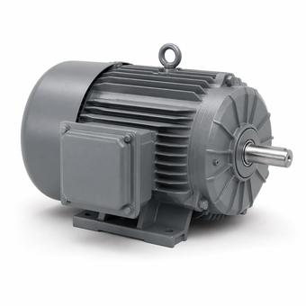

NEC 430.250: Motor Full-Load Current, and Why Not the Nameplate
Motor circuits are the one place the code tells you to ignore the number printed on the equipment. Conductors and protection are sized from a table value; the nameplate is used for overload protection and almost nothing else.

Key takeaways
- NEC 430.6(A)(1) requires conductor and protection sizing to use the table full-load current, not the motor nameplate.
- Branch-circuit conductors are sized at 125 percent of that table value, under 430.22.
- The nameplate current is used for overload protection, under 430.32, and for little else.
- Short-circuit and ground-fault protection is a percentage of the table value, and it is a large one: 250 percent for an inverse-time breaker on a squirrel-cage motor.
On this page · 6 sections
The rule that surprises people
On any other load, you size the circuit from what the equipment says it draws. On a motor circuit, NEC 430.6(A)(1) says to use the values in Tables 430.247 through 430.250 instead — 430.250 being the three-phase alternating-current table — rather than the current marked on the motor.
It reads like a mistake and it is deliberate. Table values are conservative and standardised, which means a circuit sized from them will carry any compliant motor of that horsepower and voltage, including the replacement fitted in eight years by someone who never sees the original calculation. Sizing to a specific nameplate produces a circuit that is correct for exactly one motor.
The gap is real. At 460 volts three-phase, the table gives 65 amperes for a 50 horsepower motor. A particular efficient 50 horsepower motor might draw closer to 58 amperes at full load, which the HP to kW calculator will show. The circuit is sized on 65.
What each number is used for
| Purpose | Which current, and the section |
|---|---|
| Branch-circuit conductors | Table value × 125 percent — 430.22 |
| Short-circuit and ground-fault protection | Table value × a percentage by device and motor type — 430.52 |
| Overload protection | Nameplate current — 430.32 |
| Disconnecting means | Table value, horsepower-based rating — 430.110 |
| Feeder serving several motors | 125 percent of the largest motor's table value plus the others' — 430.24 |
So the nameplate is not ignored. It is used for the one job that genuinely depends on that individual machine: protecting it from running overloaded. Everything structural — what the conductors are, what the breaker is, what the disconnect is rated — comes from the table.
The 125 percent rule
430.22 requires branch-circuit conductors supplying a single motor used in a continuous-duty application to have an ampacity of at least 125 percent of the motor's table full-load current.
For the 50 horsepower motor at 460 volts: 65 × 1.25 = 81.25 amperes of required ampacity. That is then a conductor selection problem like any other, subject to the termination temperature limit and any ambient or bundling adjustment, which the wire size calculator handles.
The 125 percent here is not the continuous-load factor from 210.19(A). It is a separate motor provision that happens to use the same multiplier, and on a motor circuit it is this one that applies.
Why the breaker looks oversized
A motor branch circuit routinely carries an overcurrent device far above the conductor ampacity, and that is correct rather than an error. Starting current on an induction motor runs six to eight times full-load for a few seconds, so a device sized to the running current would trip on every start.
430.52 therefore sets the short-circuit and ground-fault device as a percentage of the table full-load current: for a squirrel-cage motor, 250 percent for an inverse-time circuit breaker, 300 percent for a dual-element time-delay fuse, 1700 percent for an instantaneous-trip breaker. On the 65 ampere example an inverse-time breaker may be sized up to about 163 amperes, on conductors with 81 amperes of required ampacity.
What protects the conductor at those levels is the overload device, sized from the nameplate under 430.32, which is a separate element in the starter and the reason the arrangement is safe. The breaker is there for short circuits and ground faults; the overload relay is there for overload. Treating the breaker as the conductor's protection is the misreading that makes this look wrong.
Common mistakes
- Sizing conductors from the nameplate. 430.6(A)(1) requires the table value. The nameplate belongs to overload protection.
- Setting the overload from the table. The reverse error, and it leaves a specific motor unprotected or nuisance-tripping.
- Reading the breaker as conductor protection. On a motor circuit the overload relay does that, which is why the breaker can sit well above the conductor ampacity.
- Using the wrong table. 430.247 is direct current, 430.248 single-phase, 430.249 two-phase, 430.250 three-phase. Picking the wrong one produces a plausible number.
- Applying 210.19(A) instead of 430.22. Same multiplier, different provision; on a motor circuit the motor article governs.
Frequently asked questions
Why does the NEC use a table instead of the motor nameplate?
NEC 430.6(A)(1) requires the table values in 430.247 through 430.250 for sizing conductors, short-circuit protection and the disconnecting means. Table values are conservative and standardised, so a circuit sized from them will carry any compliant motor of that horsepower and voltage, including a future replacement. A circuit sized to one nameplate is correct for one motor.
Where is the motor nameplate current used?
For overload protection, under NEC 430.32. That is the one job that depends on the individual machine rather than its horsepower class. Conductors, short-circuit and ground-fault protection and the disconnecting means all come from the table instead.
What size conductor does a 50 hp motor at 460 V need?
The table full-load current is 65 amperes, and NEC 430.22 requires branch-circuit conductors with at least 125 percent of that, so 81.25 amperes of required ampacity. Selecting the conductor from there is a normal ampacity problem, subject to the termination temperature limit in 110.14(C) and any ambient or bundling adjustment.
Why is a motor breaker so much larger than the conductor ampacity?
Because it is not protecting the conductor against overload. NEC 430.52 sizes the short-circuit and ground-fault device as a percentage of the table full-load current — 250 percent for an inverse-time breaker on a squirrel-cage motor — so it rides through the six to eight times full-load starting current. Overload protection is a separate device sized from the nameplate under 430.32.
Next steps
The AC motors family in the Spec Library covers the equipment, and motor starting voltage dip covers what that starting current does to the bus.
Run the numbers
- Motor HP to kW CalculatorShaft output, supply power and calculated full-load amps.
- Motor Starting Voltage Dip CalculatorBus dip from locked-rotor kVA against source stiffness.
- Wire Size CalculatorThe conductor for the 125 percent figure.
Cite or link to this guide
Free to quote with attribution. Suggested citation: Voltfield Editorial Team, “NEC 430.250: Motor Full-Load Current, and Why Not the Nameplate” Voltfield, updated September 29, 2026. https://voltfield.org/guide-grid-forming-vs-grid-following.html
Get new guides by email
One short email when a new guide or calculator is published, at most once a month. Your address is used for nothing else.